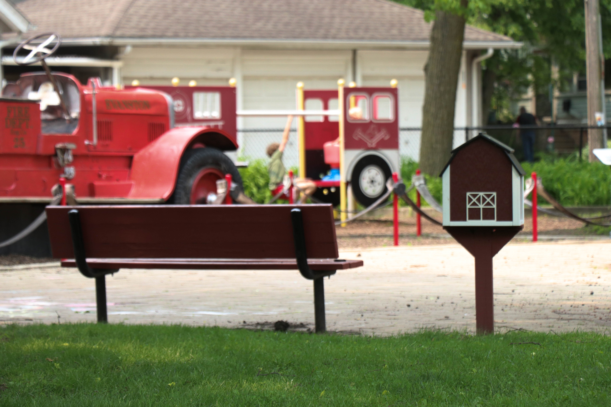

Exploring Evanston's Little Libraries

The city of Evanston is home to hundreds of lending libraries, also known as "little libraries."
This bold, geometric take on a little library can be found in front of local gift shop Ten Thousand Villages on Chicago Ave.
Continuing down Chicago Ave., this charming little library stands in Raymond Park.
Artist Kira Mountjoy-Pepka paints the Lake Street Church of Evanston in the background.
Six of Evanston's little libraries can be found in the lawns of homes managed by Londinium Properties.
Landlord David Giljohann said his main motivation with these little libraries was to foster connection between his largely Northwestern-student tenants and Evanston residents.
"They've led to people stopping at the houses---they've led to a lot of social interaction within the neighborhood," Giljohann said.
This little library at 1228 Simpson St. is one of two of his libraries on Simpson alone.
Giljohann said he puts the little libraries up himself, and personally maintains the gardens in which his libraries usually sit.
Nestled within native flora, this little library at 715 Foster St. informs residents about pollinator habitats.

Giljohann is also responsible for this barn-themed little library at Firefighter's Park. "There's no sign attributing it to me," Giljohann said.
The crossroads of various walks of life and the spirit of human generosity, opening up a little library can feel like opening the door to a new world.
This library at 1113 Grant St. takes that one step further, with an intricate fairy world set up at its base.
Just down the street, between 1108 and 1110 Grant St., is a lending library chock-full of eclectic reads, ranging from John Grisham to Beverly Cleary's classic "Ramona" series.
Giljohann said he's noticed the wide range of genres across his properties, too. "It's interesting; they all attract different kinds of books," he said.
Photojournalism Portfolio
One of Evanston's unique little libraries, in front of Ten Thousand Villages on Chicago Ave.

A view of Randolph street from the an architecture tour on the south branch of the Chicago River.

A pair of ducks walk across a bridge on Clark Street Beach in spring.
Another of Evanston's little libraries, this one in Raymond Park, just off Chicago Ave. Artist [insert name] paints the Lake Street Church of Evanston in the background.
Northwestern student Lana Sheng enjoys a spring day in front of the Frances Searle building.

Students sit outside on one of April's warmest days outside the Technological Institute on Northwestern's Evanston campus.